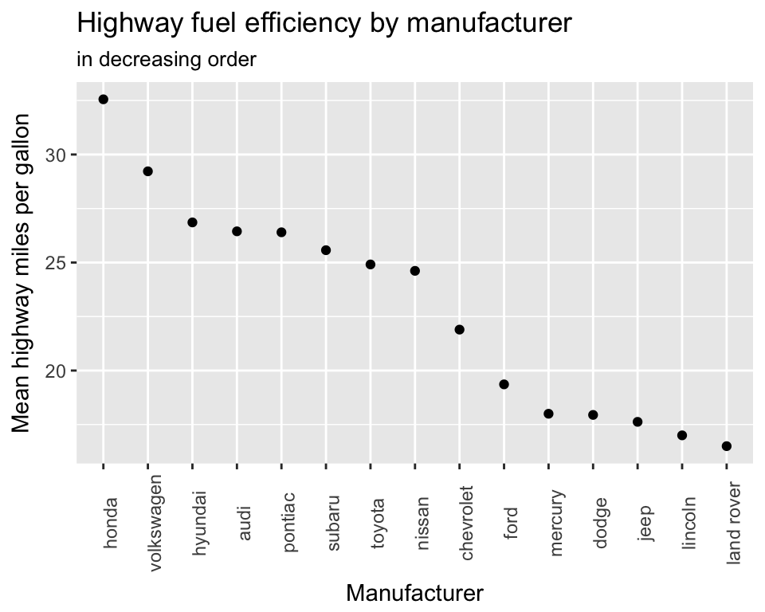

5 Common Graphics
In this section we will show the R code used to generate some common statistical graphics. The graphics will be based on built-in R datasets so you can test them easily and then change the dataset and variable (column headings) parts of the code to easily plot your own data.
5.1 Barchart
Barcharts are sometimes used to plot numerical data, including counts, for a set of categories. It is good practice with a barchart to show the bar from zero rather that cutting off the axis. For our first example of a barchart we’ll use the mpg dataset. This is available once you have loaded in the ggplot or tidyverse package. Do that now…
library(tidyverse) # NB This loads in ggplot as well as other packagesThe mpg dataset lists 234 cars and includes data on their manufacturer and fuel efficiency. We can look at the top of the dataset with this…
print(mpg, width = Inf)## # A tibble: 234 x 11
## manufacturer model displ year cyl trans drv cty hwy fl class
## <chr> <chr> <dbl> <int> <int> <chr> <chr> <int> <int> <chr> <chr>
## 1 audi a4 1.8 1999 4 auto(l5) f 18 29 p compact
## 2 audi a4 1.8 1999 4 manual(m5) f 21 29 p compact
## 3 audi a4 2.0 2008 4 manual(m6) f 20 31 p compact
## 4 audi a4 2.0 2008 4 auto(av) f 21 30 p compact
## 5 audi a4 2.8 1999 6 auto(l5) f 16 26 p compact
## 6 audi a4 2.8 1999 6 manual(m5) f 18 26 p compact
## 7 audi a4 3.1 2008 6 auto(av) f 18 27 p compact
## 8 audi a4 quattro 1.8 1999 4 manual(m5) 4 18 26 p compact
## 9 audi a4 quattro 1.8 1999 4 auto(l5) 4 16 25 p compact
## 10 audi a4 quattro 2.0 2008 4 manual(m6) 4 20 28 p compact
## # ... with 224 more rowsTo plot a barchart showing the number of cars in the dataset from each manufacturer we can use the ggplot() function with manufacturer as the x aesthetic and using the geom_bar geom.
ggplot(mpg, aes(x = manufacturer)) +
geom_bar()The geom_bar geom is clever. If you just give it a factor (categories) as the x aesthetic it will default to counting each category and plotting the counts. So each bar height shows the number of rows for that manufacturer. Lets tidy up the x axis labels by rotating them through 90 degrees. We add a new line of code with a theme() function and tell it to set the angle of the x axis to 90 degrees…
ggplot(mpg, aes(x = manufacturer)) +
geom_bar() +
theme(axis.text.x = element_text(angle = 90))The manufacturers here appear in alphabetical order. It would be interesting to sort the plot so the bars are sorted by the number of car models each manufacturer produces. We can do this by changing the factor levels of the manufacturer column (don’t worry about details in the code - it uses the fct_reorder function in the forcats package to sort on the number of cars)…
ggplot(mpg, aes(x = forcats::fct_reorder(manufacturer, manufacturer, length))) +
geom_bar() +
theme(axis.text.x = element_text(angle = 90))Finally lets tidy up the axis labels and give the plot a title…
ggplot(mpg, aes(x = forcats::fct_reorder(manufacturer, manufacturer, length))) +
geom_bar() +
theme(axis.text.x = element_text(angle = 90)) +
labs(x = "Manufacturer",
y = "Number of car models",
title = "Car models by manufacturer",
subtitle = "(from R mpg dataset")5.2 Dot chart
Dot charts are also used to display numerical values for a set of categories. They work well when we wish to truncate an axis and not include zero. We’ll show you what we mean by that. First we’ll summarise the mpg data to make a small dataset that has the mean highway mpg (miles per gallon of fuel) for each manufacturer. You can run the following code to make this dataset (don’t follow if you don’t understand it - we cover that elsewhere)…
mean_mpg <- mpg %>%
group_by(manufacturer) %>%
summarise(mean_hwy_mpg = mean(hwy)) %>%
ungroup()Now we’ll plot a dot chart for this data. We’ll put the mnaufacture on the x axis and mean mpg o the y axis using a geom_point. We’ll also use the theme function to rotate the x axis labels - like we did for the barchart
ggplot(mean_mpg, aes(x = manufacturer, y = mean_hwy_mpg)) +
geom_point() +
theme(axis.text.x = element_text(angle = 90))Again it would make sense to sort the manufacturers by the result we are plotting. We’ll use simialr code to the the code we used with the barchart but we’ll add in .desc = TRUE to sort in decresaing order. Finally we’ll also add some better axis labels and a title.
ggplot(mean_mpg, aes(x = forcats::fct_reorder(manufacturer,
mean_hwy_mpg,
.desc = TRUE),
y = mean_hwy_mpg)) +
geom_point() +
theme(axis.text.x = element_text(angle = 90)) +
labs(x = "Manufacturer",
y = "Mean highway miles per gallon",
title = "Highway fuel efficiency by manufacturer",
subtitle = "in decreasing order")
You’ll see that ggplot has automatically truncated the axis to give the clearest comaprison. This is fine with a dot chart. If we included zero we’d lose detail in the data. Here we’ll use last_plot() as a shortcut to take our last plot and modify it. Adding ylim(c(0, 40)) fixes the limits of the y axis from 0 to 40. It’s not as easy to see the difference between the mean fuel efficiencies of the different manufactuers.
last_plot() +
ylim(c(0, 40))5.3 Histogram
Histograms show a summary of the distribution of a numerical value. In this example we’ll use the diamonds dataset that’s built in to ggplot and should be already loaded if you’ve typed library(tidyverse). First lets look at the dataset…
print(diamonds, width = Inf)## # A tibble: 53,940 x 10
## carat cut color clarity depth table price x y z
## <dbl> <ord> <ord> <ord> <dbl> <dbl> <int> <dbl> <dbl> <dbl>
## 1 0.23 Ideal E SI2 61.5 55 326 3.95 3.98 2.43
## 2 0.21 Premium E SI1 59.8 61 326 3.89 3.84 2.31
## 3 0.23 Good E VS1 56.9 65 327 4.05 4.07 2.31
## 4 0.29 Premium I VS2 62.4 58 334 4.20 4.23 2.63
## 5 0.31 Good J SI2 63.3 58 335 4.34 4.35 2.75
## 6 0.24 Very Good J VVS2 62.8 57 336 3.94 3.96 2.48
## 7 0.24 Very Good I VVS1 62.3 57 336 3.95 3.98 2.47
## 8 0.26 Very Good H SI1 61.9 55 337 4.07 4.11 2.53
## 9 0.22 Fair E VS2 65.1 61 337 3.87 3.78 2.49
## 10 0.23 Very Good H VS1 59.4 61 338 4.00 4.05 2.39
## # ... with 53,930 more rowsThe price column records the diamond’s price in dollars. Let’s plot a basic histogram by mapping the x aesthetic to the price column and adding geom_histigram…
ggplot(diamonds, aes(x = price)) +
geom_histogram()ggplot(diamonds, aes(x = price)) +
geom_histogram(binwidth = 2000)ggplot(diamonds, aes(x = price)) +
geom_histogram(binwidth = 200)Now we have a resonable looking overall histogram we can dig deeper and look at the distribution of prioces within different groups of diamonds. The clarity column in the diamonds dataset contains a code for, you guessed it, the diamond’s clarity. Lets ‘facet’ the plot by that variable to do a histogram for each clarity class…
ggplot(diamonds, aes(x = price)) +
geom_histogram(binwidth = 200) +
facet_wrap(~ clarity)